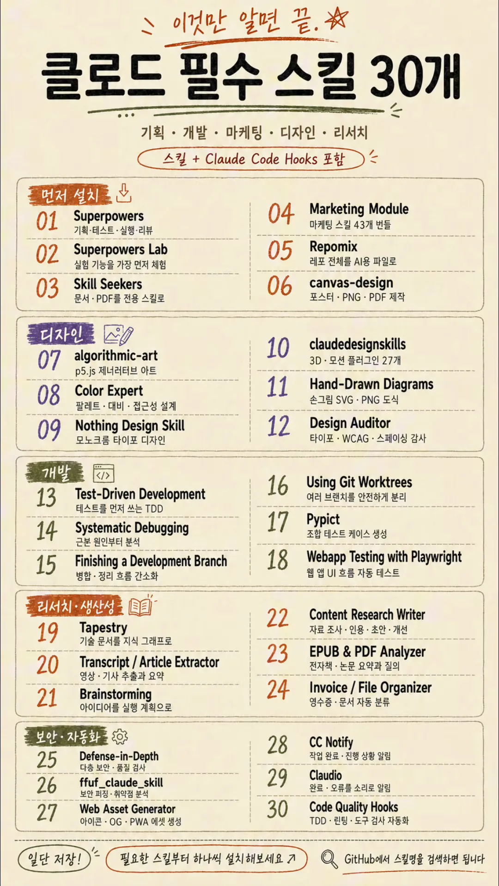

표 한 장, 그리고 네 종류
표는 위에서부터 제목, 다루는 분야, 다섯 묶음, 맨 아래 안내 문구 순서예요. 제목 아래 둥근 칸에 "스킬 + Claude Code Hooks 포함"이라고 적혀 있어서, 처음부터 스킬만 모은 표는 아니라고 밝혀 둔 셈이에요. 다섯 묶음은 색 띠로 나뉘어요. 주황 '먼저 설치', 보라 '디자인', 녹색 '개발', 주황 '리서치·생산성', 녹색 '보안·자동화'이고, 묶음마다 여섯 개씩 번호가 붙어 있어요.

맨 아래 오른쪽 문구는 "GitHub에서 스킬명을 검색하면 됩니다"예요. 설명란도 같은 말을 하고, 처음이라면 Superpowers, Skill Seekers, Repomix부터 시작하라고 권해요. 그런데 이름 그대로 검색해서는 안 나오는 항목이 꽤 있어요. 그래서 아래 다섯 섹션은 표의 순서대로 30개를 옮기고, 실제로 찾은 저장소와 다른 점을 옆에 붙였어요.
찾아 보니 네 종류가 섞여 있어요
저장소를 열어 보면 30개는 하는 방식이 제각각이에요. 표에서는 모두 '스킬'로 묶였지만, 설치하는 방법이 달라서 먼저 구분해 두면 편해요.
| 종류 | 번호 | 설치하는 방법 |
|---|---|---|
| 스킬(단독 저장소) | 02, 06–12, 17–20, 22, 24, 26, 27 | 스킬 폴더를 복사하거나 플러그인으로 설치 |
| Superpowers에 든 스킬·문서 | 01, 13–16, 21, 25 | 01 하나만 설치하면 함께 들어와요 |
| 따로 설치하는 도구 | 03 Skill Seekers, 05 Repomix | pip·npx로 설치하는 프로그램 |
| 훅 | 28 CC Notify, 29 Claudio | Claude Code 설정에 훅으로 등록 |
| 확인 못 함 | 04, 23, 30 | 이름 그대로인 프로젝트를 찾지 못했어요 |
먼저 설치 (01–06)
설명란이 "처음이라면 여기부터"라고 꼽은 세 개(Superpowers, Skill Seekers, Repomix)가 이 묶음에 있어요. 그중 스킬 자체는 Superpowers 하나이고, 나머지 둘은 따로 설치하는 프로그램이에요.
| 번호 | 표의 이름 · 설명 | 실제로 찾은 것 | 저장소 |
|---|---|---|---|
| 01 | Superpowers 기획·테스트·실행·리뷰 | 브레인스토밍, 계획 쓰기, TDD(Test-Driven Development), 디버깅, 코드 리뷰 등 스킬 15개가 든 개발 방법론 묶음이에요. 설명과 맞아요. | obra/superpowers |
| 02 | Superpowers Lab 실험 기능을 가장 먼저 체험 | 아직 다듬는 중인 실험 스킬 4개를 따로 모은 플러그인이에요. Superpowers의 다음 기능을 미리 보는 곳이라기보다 별도 실험 모음이에요. | obra/superpowers-lab |
| 03 | Skill Seekers 문서·PDF를 전용 스킬로 | 문서 사이트, GitHub 저장소, PDF, 영상 등을 스킬로 바꿔 주는 파이썬 도구예요. 스킬이 아니라 스킬을 만드는 프로그램이에요. | yusufkaraaslan/Skill_Seekers |
| 04 | Marketing Module 마케팅 스킬 43개 번들 | 확인 못 함. 이 이름의 프로젝트는 찾지 못했어요. 가까운 후보는 아래 보충 설명에 적었어요. | 확인 못 함 |
| 05 | Repomix 레포 전체를 AI(Artificial Intelligence)용 파일로 | 저장소 전체를 AI에 넣기 좋은 파일 하나로 묶는 CLI(Command-Line Interface) 도구예요. 설명과 맞지만 스킬은 아니에요. | yamadashy/repomix |
| 06 | canvas-design 포스터·PNG(Portable Network Graphics)·PDF 제작 | Anthropic 공식 스킬이에요. 포스터 같은 정적 디자인을 PNG·PDF로 만들어요. 설명과 맞아요. | anthropics/skills |
디자인 (07–12)
디자인 묶음의 여섯 개는 모두 실제 저장소를 찾았어요. 07은 Anthropic 공식이고, 나머지는 개인이 만든 스킬이에요. 설명도 대체로 맞는데, 10번의 '27개'는 세는 방식이 조금 달라요.
| 번호 | 표의 이름 · 설명 | 실제로 찾은 것 | 저장소 |
|---|---|---|---|
| 07 | algorithmic-art p5.js 제너러티브 아트 | Anthropic 공식 스킬이에요. 시드를 둔 무작위값과 조절 가능한 변수로 p5.js 작품을 만들어요. 설명과 맞아요. | anthropics/skills |
| 08 | Color Expert 팔레트·대비·접근성 설계 | 색 공간, APCA(Accessible Perceptual Contrast Algorithm)·WCAG(Web Content Accessibility Guidelines) 대비, 팔레트 생성, 안료 혼합까지 담은 참고 자료형 스킬이에요. 실제 이름은 color-expert예요. | meodai/skill.color-expert |
| 09 | Nothing Design Skill 모노크롬 타이포 디자인 | 휴대폰 브랜드 Nothing의 디자인 언어(흑백, 활자 중심, 도트 매트릭스)로 화면을 만들어요. HTML(HyperText Markup Language)/CSS, SwiftUI, React/Tailwind로 내보내요. | dominikmartn/nothing-design-skill |
| 10 | claudedesignskills 3D·모션 플러그인 27개 | Three.js, GSAP(GreenSock Animation Platform), React Three Fiber 같은 3D·애니메이션 스킬 마켓플레이스예요. 27개는 개별 플러그인 22개와 묶음 5개를 합친 수예요. | freshtechbro/claudedesignskills |
| 11 | Hand-Drawn Diagrams 손그림 SVG(Scalable Vector Graphics)·PNG 도식 | 말로 설명하면 Excalidraw 손그림 스타일의 흑백 도식을 그려요. 편집용 웹 주소, 그려지는 애니메이션 SVG, 요청하면 PNG를 줘요. | muthuishere/hand-drawn-diagrams |
| 12 | Design Auditor 타이포·WCAG·스페이싱 감사 | 디자인을 19개 범주로 점검해 100점 만점 점수, 접근성 점수, 문제 목록을 줘요. Figma, 코드, 스크린샷을 받고 한국어도 지원해요. | Ashutos1997/claude-design-auditor-skill |
개발 (13–18)
개발 묶음은 여섯 개 중 네 개가 01 Superpowers 안에 이미 있는 스킬이에요. 따로 찾아 설치할 필요가 없어요. 나머지 둘은 테스트 쪽인데, 18번은 화면의 이름으로 검색하면 잘 안 나와요.
| 번호 | 표의 이름 · 설명 | 실제로 찾은 것 | 저장소 |
|---|---|---|---|
| 13 | Test-Driven Development 테스트를 먼저 쓰는 TDD | Superpowers의 test-driven-development 스킬이에요. 기능이나 버그 수정의 구현 코드를 쓰기 전에 쓰도록 되어 있어요. | obra/superpowers |
| 14 | Systematic Debugging 근본 원인부터 분석 | Superpowers의 systematic-debugging 스킬이에요. 버그나 테스트 실패를 만나면 고치기 전에 원인부터 찾게 해요. | obra/superpowers |
| 15 | Finishing a Development Branch 병합·정리 흐름 간소화 | Superpowers 스킬이에요. 구현이 끝나고 테스트가 통과하면, 작업을 어떻게 합칠지 선택지를 보여 주고 고른 대로 처리해요. | obra/superpowers |
| 16 | Using Git Worktrees 여러 브랜치를 안전하게 분리 | Superpowers 스킬이에요. 기능 작업을 시작할 때 지금 작업 공간과 분리된 워크트리를 만들어 줘요. | obra/superpowers |
| 17 | Pypict 조합 테스트 케이스 생성 | 스킬 이름은 'PICT Test Designer'예요. 요구사항을 PICT(Pairwise Independent Combinatorial Testing) 모델로 바꿔 페어와이즈 조합 테스트를 만들고 기대 결과까지 붙여요. | omkamal/pypict-claude-skill |
| 18 | Webapp Testing with Playwright 웹 앱 UI(User Interface) 흐름 자동 테스트 | Anthropic 공식 webapp-testing 스킬이에요. Playwright로 로컬 웹 앱을 열어 화면 동작을 확인하고, 스크린샷과 브라우저 로그를 봐요. | anthropics/skills |
리서치·생산성 (19–24)
이 묶음은 이름 하나에 스킬 두 개가 묶인 항목이 둘(20, 24) 있고, 표의 설명이 실제와 가장 크게 다른 항목(19)도 있어요. 23번은 이름 그대로인 프로젝트를 찾지 못했어요.
| 번호 | 표의 이름 · 설명 | 실제로 찾은 것 | 저장소 |
|---|---|---|---|
| 19 | Tapestry 기술 문서를 지식 그래프로 | URL(Uniform Resource Locator)을 받아 영상·글·PDF 내용을 뽑고 실행 계획으로 바꾸던 스킬이에요. 지식 그래프 기능은 아니고, 지금은 이름이 learn-this로 바뀌었어요. | michalparkola/tapestry-skills |
| 20 | Transcript / Article Extractor 영상·기사 추출과 요약 | 같은 저장소의 youtube-transcript와 article-extractor, 두 스킬이에요. 둘 다 내용을 받아 깨끗한 텍스트로 저장하는 게 주 기능이에요. | michalparkola/tapestry-skills |
| 21 | Brainstorming 아이디어를 실행 계획으로 | Superpowers의 brainstorming 스킬이에요. 무언가 새로 만들기 전에 질문을 주고받으며 설계를 다듬어요. | obra/superpowers |
| 22 | Content Research Writer 자료 조사·인용·초안·개선 | 조사, 인용 추가, 도입부 다듬기, 개요 수정, 섹션별 피드백을 돕는 글쓰기 스킬이에요. 설명과 맞아요. | ComposioHQ/awesome-claude-skills |
| 23 | EPUB & PDF Analyzer 전자책·논문 요약과 질의 | 확인 못 함. 이 이름의 프로젝트는 찾지 못했어요. | 확인 못 함 |
| 24 | Invoice / File Organizer 영수증·문서 자동 분류 | invoice-organizer(영수증·청구서를 읽어 이름을 바꾸고 폴더로 나눔)와 file-organizer(파일 정리·중복 찾기), 두 스킬이에요. | ComposioHQ/awesome-claude-skills |
보안·자동화 (25–30)
'보안·자동화' 묶음은 이름과 실제가 가장 많이 어긋나요. 보안 도구라고 할 만한 건 26번 하나이고, 25번은 디버깅 기법 문서, 27번은 이미지 생성 스킬이에요. 28·29번은 스킬이 아니라 훅이에요.
| 번호 | 표의 이름 · 설명 | 실제로 찾은 것 | 저장소 |
|---|---|---|---|
| 25 | Defense-in-Depth 다층 보안·품질 검사 | 따로 있는 스킬이 아니라 Superpowers의 systematic-debugging 안에 든 참고 문서예요. 데이터가 지나는 모든 층에서 검증하라는 디버깅 기법이에요. | obra/superpowers |
| 26 | ffuf_claude_skill 보안 퍼징·취약점 분석 | 웹 퍼저 ffuf로 숨은 경로, 파일, 서브도메인, API(Application Programming Interface) 엔드포인트를 찾게 하는 스킬이에요. 설명과 맞아요. | jthack/ffuf_claude_skill |
| 27 | Web Asset Generator 아이콘·OG(Open Graph)·PWA(Progressive Web App) 에셋 생성 | 로고·글자·이모지로 파비콘, 16–512px 앱 아이콘, 소셜 공유 이미지를 만들고 프레임워크에 맞춰 태그를 넣어 줘요. | alonw0/web-asset-generator |
| 28 | CC Notify 작업 완료·진행 상황 알림 | 입력이 필요하거나 작업이 끝나면 데스크톱 알림을 띄우는 훅이에요. 알림을 누르면 VS(Visual Studio) Code의 해당 프로젝트로 가요. macOS 전용이에요. | dazuiba/CCNotify |
| 29 | Claudio 완료·오류를 소리로 알림 | 훅 이벤트마다 다른 소리를 내는 프로그램이에요. 도구 성공·실패, 완료, 알림 등을 구분하고 Codex CLI, Gemini CLI도 지원해요. | ctoth/claudio |
| 30 | Code Quality Hooks TDD·린팅·도구 검사 자동화 | 확인 못 함. 이 이름의 단일 프로젝트는 찾지 못했어요. 비슷한 일을 하는 훅은 아래 보충 설명에 적었어요. | 확인 못 함 |